Des Contrôles en blocs
Les pastilles, le son et les écrans en haut, puis quatre blocs (Écrans, Appareils, Outils, Alimentation) qui s'ouvrent en page là où tu cliques. Rien n'a été retiré.
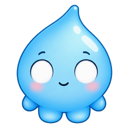
Une petite île en haut de ton écran Windows. Musique, notes, minuteurs, outils et agents IA, sans changer de fenêtre.
Au premier lancement, Windows peut afficher « Windows a protégé votre ordinateur » : l'installateur n'est pas signé avec un certificat payant. Cliquez sur Informations complémentaires, puis Exécuter quand même. Il est construit par GitHub à partir du code public.
Version 1.2.5 · sortie le 28 octobre 2026
La 1.2.5 range les Contrôles en blocs, habille l'île d'une encoche noire et lui donne un vrai menu de fichiers. L'Eau et les Paroles sont coupées par défaut : tu les allumes dans les réglages.
Les pastilles, le son et les écrans en haut, puis quatre blocs (Écrans, Appareils, Outils, Alimentation) qui s'ouvrent en page là où tu cliques. Rien n'a été retiré.
Le mode de Windows+P, l'écran principal choisi sur son dessin, la luminosité de chaque écran, et « Éteindre seulement l'écran ».
Un curseur et un bouton couper pour chaque appli qui joue du son, et les Wi-Fi à portée, un clic pour te connecter à un réseau connu.
Clavier et souris bloqués 30 secondes le temps de les essuyer, avec un compte à rebours. Échap maintenue 2 secondes arrête avant.
Maintiens Ctrl gauche 1,5 seconde : l'île montre les raccourcis de l'appli ouverte (Excel, Word, VS Code, Teams…), de Windows et d'Ondine.
Verrouiller, Veille, Redémarrer, Éteindre après une seconde d'appui : un anneau se remplit, lâcher annule.
Le débit reçu et envoyé chaque seconde, et en option la vitesse dans la mini-île pendant un gros téléchargement.
Une île noire, fondue dans le bord de l'écran par deux coins creux, avec une lueur à la couleur du thème. Sur les quatre bords.
La ligne chantée s'allume et défile toute seule, un clic sur une ligne y va dans le morceau. L'égaliseur suit enfin le vrai son. Coupé par défaut.
Un nouveau module : le total du jour, « + 25 cl », la semaine en barres et un rappel qui se tait pendant un appel. Coupé par défaut.
Donne une heure à une tâche : l'île te prévient, « Fait » la coche, « 10 min » la repousse.
Win + Espace ou Alt + Maj : un petit aperçu « Clavier en anglais », comme pour Verr Maj.
Glisse un fichier sur l'île : Convertir, Ranger, Outils et tes favoris en icônes rondes. Tu survoles, puis tu cliques ; lâcher ne lance plus rien.
Un fichier lâché sur Ondine posée sur le bureau ouvre un menu en cercle autour d'elle, et l'Étagère se détache juste à côté.
Changer d'onglet ne rejoue plus toute la cascade, les Réglages arrivent en moins de 0,3 s, et « Réduire les animations » garde des fondus courts.
Version 1.2.4 · sortie le 17 octobre 2026
La 1.2.4 apprend à Ondine à t'écouter, range tes réglages et ajoute une bonne poignée d'outils. La plupart des nouveautés sont coupées par défaut : tu les allumes dans les réglages.
Maintiens Ctrl droit dans n'importe quelle appli, parle, relâche : le texte est collé. Ton presse-papiers retrouve son contenu.
D'un clic, Ondine écrit ton appel en direct, puis la transcription personne par personne et un résumé avec les choses à faire. L'audio est effacé ensuite.
La dictée, les notes d'appel et Parler à Ondine peuvent reconnaître ta voix sans Internet, avec le modèle Parakeet de NVIDIA (25 langues).
Parle-lui sans toucher au clavier, choisis ton micro et teste-le, crée ton propre raccourci. Tes mots s'écrivent pendant que tu parles.
Deux colonnes, du verre liquide, Ctrl+K pour tout trouver, des préréglages en un clic et « Annuler » après chaque changement.
Glisse un fichier sur l'île et lâche-le sur un format : JPG, PNG, PDF, MP3, ZIP… Ondine l'avale et recrache le nouveau fichier.
Teams, Outlook, WhatsApp… les bulles des autres applis peuvent passer par l'île, avec « Ouvrir ». Coupé par défaut.
La liste de tâches de l'agent en barre de progression, les fichiers modifiés en direct et les limites de ton forfait Claude ou Codex.
Puissance 4, morpion express dans la mini-île, un aquarium de gouttes qui grandit avec tes pauses, et une course de gouttes.
Garde le PC éveillé le temps d'un téléchargement ou d'un agent, ou programme son arrêt ou sa mise en veille.
Les mises à jour de tes logiciels en un clic, et « Qu'est-ce qui remplit mon disque ? » quand il n'y a plus de place.
Tes lumières et appareils dans l'île, et à la voix : « Dis Ondine, allume la lumière du salon ».
À côté de « Rejoindre », l'île te montre ton image et le niveau de ton micro avant d'entrer.
Lâche une fenêtre sur l'île : Ondine l'avale. Un clic et elle la recrache. Coupé par défaut.
Une clé API ou un jeton copié n'entre plus dans l'historique du presse-papiers.
Version 1.2.3 · sortie le 11 octobre 2026
La 1.2.3 donne une bouche à Ondine, un vrai accueil à l'île et un tout petit format nano.
Un nouveau style au choix : Ondine pend tête en bas et l'île devient sa bouche, en gomme de la couleur de ta mascotte.
Une carte par module qui a quelque chose à dire (musique, agents, minuteur, rendez-vous, météo…) et une phrase d'Ondine qui résume ta journée.
Pour une vingtaine d'actions, elle quitte sa place en petits sauts de gomme, agit, puis revient. Elle ne cache jamais le texte.
La mini-île devient une toute petite encoche qui ne montre qu'Ondine. Elle s'élargit au survol, pour un morceau, un minuteur ou un agent.
L'île en verre clair, blanc dépoli. Tous les onglets restent lisibles.
La molette au-dessus de l'île règle le volume, sans cliquer. Un double-clic sur Ondine lance l'action de ton choix.
Pluie, vagues, bruit doux, fabriqués par Ondine sans aucun fichier. Le liquide de l'île suit le son.
Ondine se promène au bord de l'eau, l'heure au centre. Jamais pendant une présentation ou un appel. Coupé par défaut.
Ajoute un collègue en lisant son QR code, et gère tes téléphones dans Réglages → Téléphones, chacun avec son propre certificat.
Version 1.2.2 · sortie le 10 octobre 2026
La 1.2.2 fait parler Ondine à voix haute, allume des halos autour de l'île et crée l'Équipe, pour que les Ondine d'un même réseau se parlent.
Ctrl+Alt+V, tu parles, tes mots s'écrivent en direct et le halo tremble avec ta voix. Elle répond en « plop plip », la bouche synchro.
Vert quand tu branches le PC, orange quand la batterie faiblit, rouge critique avec Ondine qui panique. Et des halos pour l'USB, les agents, la météo…
Eau, gelée, lumière ou sable : il monte avec un minuteur, ondule avec la musique et penche quand tu déplaces l'île.
Elle s'écarte des réglages avec une petite peur, s'assoit sur une fenêtre, met ses lunettes de soleil la nuit. L'île peut aussi se poser en bas.
Ondine se présente et configure tout en 5 étapes. L'île commence petite et propose le bon onglet au bon moment.
Les Ondine d'un même réseau local se parlent : chat chiffré de bout en bout, présence, coucou, fichiers toujours à accepter. Coupé par défaut.
Ondine trouve le tempo et danse dans le style du morceau (rock, rap, jazz, électro…), pour les 15 mascottes.
Un reflet qui suit la souris, une gomme translucide avec des bulles, des pupilles qui se dilatent et 15 nouvelles expressions.
« volume 30 », « minuteur 10 minutes » sans IA ni clé, et une recherche Google, DuckDuckGo ou Qwant depuis le Lanceur.
Version 1.2.1 · sortie le 9 octobre 2026
La 1.2.1 transforme « Demander à Claude » en vraie conversation avec Ondine, et la laisse sortir de l'île.
Une vraie conversation en bulles, avec sa personnalité et ses humeurs. Avec Claude, GPT ou Gemini et ta clé ; rien n'est écrit sur le disque.
Ondine cherche tes fichiers par leur nom, en lit un ou en crée un dans son dossier. Elle te montre tout et attend ton accord.
Volume, luminosité, mode sombre, minuteur, note, Wi-Fi… quand tu le lui demandes. Elle ne peut rien supprimer.
Tire la mascotte hors de l'île et pose-la où tu veux. Un clic ouvre une bulle à côté d'elle, et elle s'assoit sur la barre des tâches.
Les modules en catégories repliables, les pages longues en sous-menus. Rien n'a été retiré.
Toutes les mascottes, animées, sur des marches : glisse celle que tu veux sur la première.
Version 1.2.0 · sortie le 8 octobre 2026
La 1.2.0 fait naître la famille gomme : quinze mascottes, une île en gelée et des agents IA bien mieux suivis.
Guimauve, Dragée, Berlingot, étoile, lune, nuage, fantôme… plus Ciel et Météo. Avec des mains, des accessoires et douze expressions.
Elle se creuse sous un clic, gonfle au survol et s'étire sous la souris. Réglage Élasticité : Doux, Normal, Gelée.
Des étoiles dans les yeux pour un fichier, les bras levés à la fin du minuteur, un parapluie quand il va pleuvoir. Et une couleur sur mesure.
Entrée, sortie, cache, par jour, par modèle et par projet, une courbe sur 30 jours, un coût estimé et une alerte de budget.
GitHub Copilot CLI, Cursor CLI, Qwen Code, Goose, OpenCode, Kiro CLI, Hermes, Aider et Amp se lancent depuis l'île.
« Claude a fini » montre sa dernière phrase, et les fichiers modifiés s'ouvrent dans VS Code ou en comparaison.
La grille de tes contributions dans la couleur de l'île, et une fête pour les séries de 7, 30 et 100 jours.
Seul l'essentiel de chaque page par défaut, tout le reste à un clic. La recherche trouve toujours tout.
Moins de gestes spontanés pour une île tranquille ; les états utiles restent.
Version 1.1.0 · sortie le 7 octobre 2026
Sortie le soir même de la 1.0, la 1.1.0 ajoute une bonne liste d'outils du quotidien.
Opérations, pourcentages, unités, octets, sous-réseaux IPv4 et l'heure dans une autre ville.
Envoie un fichier de l'étagère au téléphone par un QR code, sur le Wi-Fi local.
Les fichiers modifiés, « Ouvrir dans VS Code » et « Reprendre » la dernière session.
JWT, Base64, URL, JSON, date Unix, et l'empreinte SHA-256 d'un fichier.
Enregistre une zone de l'écran en GIF animé.
Éjecter une clé USB, mode sombre et éclairage nocturne.
Réveille un PC à distance (Wake-on-LAN), et un redémarrage en attente est signalé.
Rejoindre une réunion en un clic, horloges du monde et bilan de la semaine.
Un panneau après chaque mise à jour, et une astuce à la première ouverture de chaque onglet.
Version 1.0.1 · sortie le 7 octobre 2026
Quelques heures après la 1.0, une version de correctifs.
Au premier lancement, la mascotte Gomme et la mini-île toujours affichée.
« Y aller » ramène bien la fenêtre de Windows Terminal dans la version installée.
Plus besoin d'installer le « Visual C++ Redistributable ».
Version 1.0.0 · sortie le 7 octobre 2026
La toute première version publique : l'île, ses modules, ses agents IA et quelques surprises.
Pluie de code, Ondine 8 bits (code Konami), jours de fête et un carnet des trésors dans les réglages. Désactivables.
Bonnet de nuit, lunettes de soleil le vendredi soir, café le lundi matin, mains sur les oreilles à 100 % de volume…
Notes, presse-papiers, étagère, captures et apps, sans te soucier des accents ni des majuscules.
Des profils qui changent tout seuls selon l'heure ou le Wi-Fi.
Plusieurs calendriers colorés, un clic pour rejoindre Teams, Meet, Zoom ou Webex, et la météo (coupée par défaut).
La couleur d'un point de l'écran en HEX, RGB ou HSL, et un QR code de ce que tu viens de copier.
Claude Code, Codex et Gemini CLI préviennent l'île sans rien configurer, avec sauvegarde et bouton « Retirer ».
Le minuteur met les notifications en pause.
Haute performance, équilibré ou économie d'énergie, automatique sur batterie.
L'île reste discrète en mini et s'ouvre au survol. Chaque module se règle ou se cache dans les réglages.
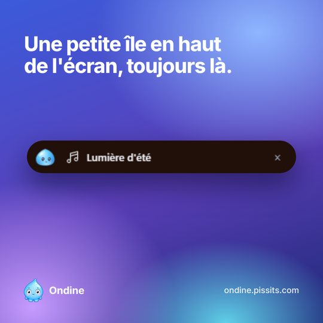
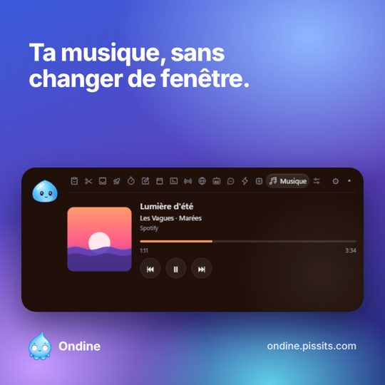
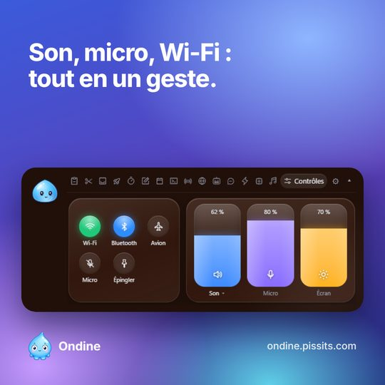
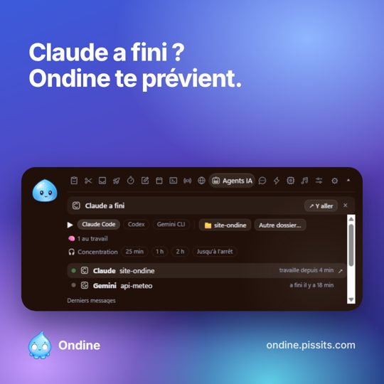
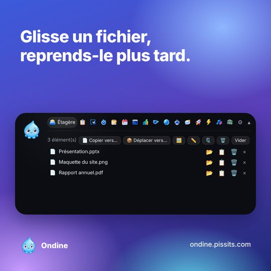
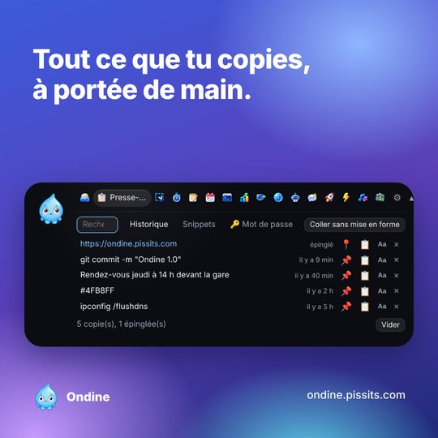
Choisis celle qui vivra dans ton île. Elles sont dessinées en direct, exactement comme dans l'appli : passe la souris dessus, elles te font coucou.
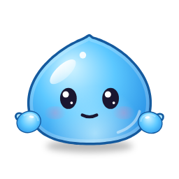
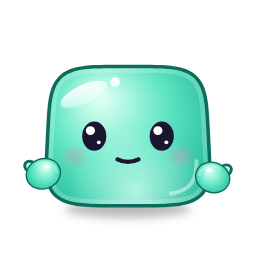
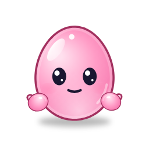
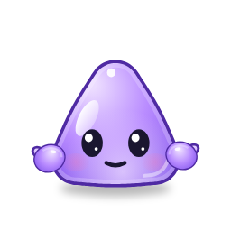
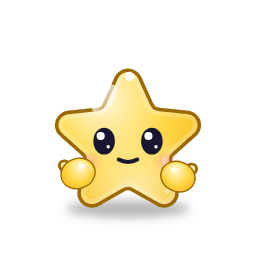
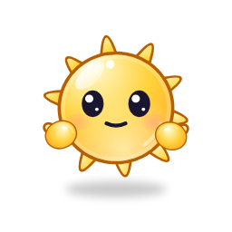
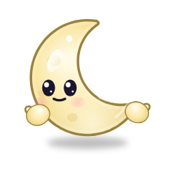
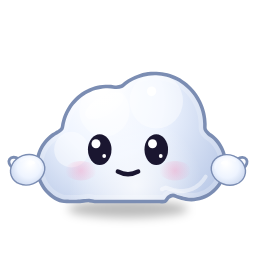
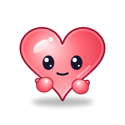
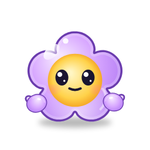
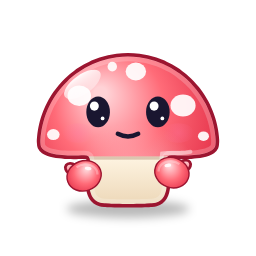
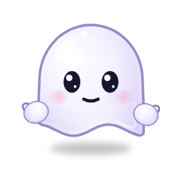
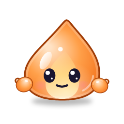
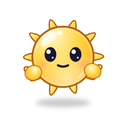
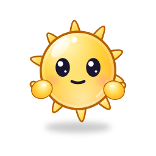
Quand un agent a fini ou attend ta réponse, Ondine te prévient dans l'île. Un clic et tu retournes dans le bon terminal.